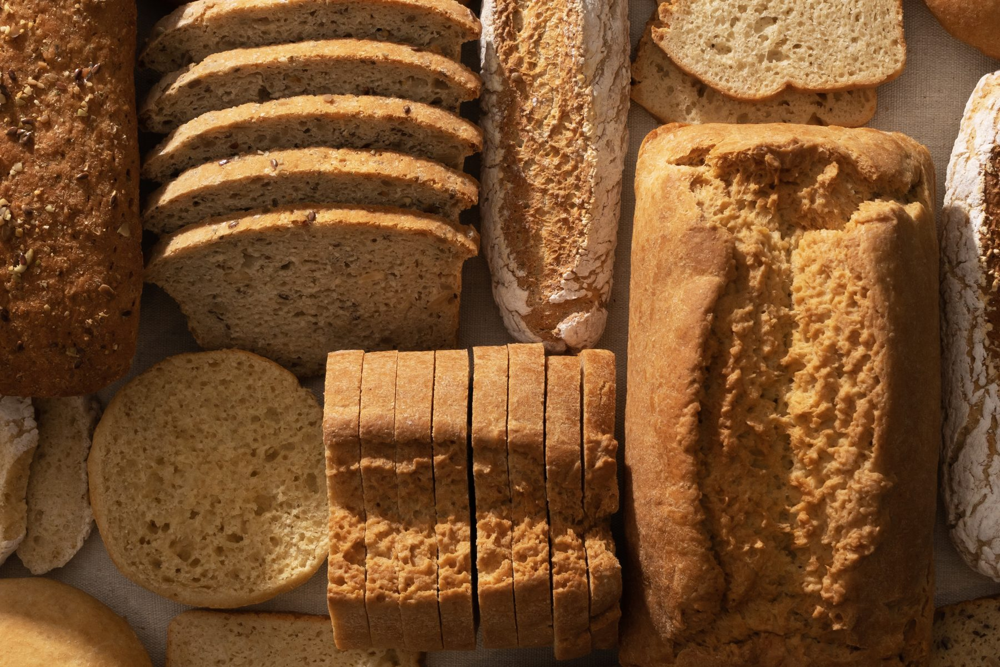
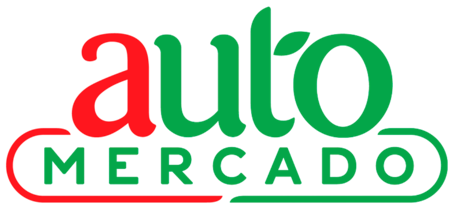

Pan y antojos sin gluten.
Ingredientes simples, cero conservantes y un solo requisito: que sea divino.

Encuéntranos
en los congeladores
de tu supermercado

Ver sucursales ↗︎- Ver sucursales ↗︎
- Ver sucursales ↗︎
- Ver sucursales ↗︎
- Ver sucursales ↗︎
- * Solo Escazú y Tamarindo
Y en restaurantes
Pide tus platos favoritos con nuestro pan en algunos de los mejores restaurantes del país.
- Franco
- Simple
- Negroni
- Chez Christophe
- Sula
- La Recoleta
- y otros
Pídelo en línea
Escoge, paga por SINPE Móvil o transferencia, y recoges o te lo llevamos.
Tienda Online